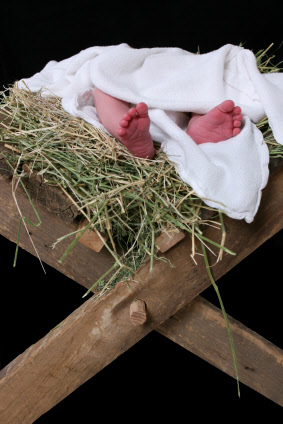
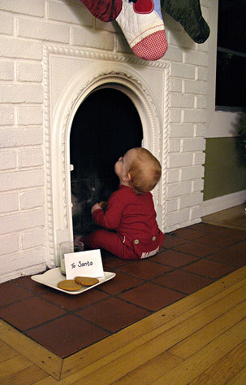

Baby First Christmas?
Simple Ideas for Extravagant Memories
 Our greatest Christmas gift!
Don't let a busy schedule cause this baby first Christmas pass by unnoticed.
Take the whole season (rather than just the day) and watch it blossom from lukewarm to legendary.
Busy moms everywhere have used these simple tips to meaningfully capture the significance of this baby first Christmas.
It will never come again! So use these little suggestions to shake every ounce of meaning out of the busiest season of the year.

Baby First Christmas Tip #1:
Set Up a Charging Station
One of the simplest things you can do to set up for your infant's first Christmas is to keep all your digital cameras and video cameras charged and ready for grab-and-go use.
Set aside a corner of a bookshelf or counter to have your chargers plugged-in and ready to go at the first sign of a low battery.
What a horrible feeling it is to watch your baby experience snow for the first time, or get excited watching you hang lights, only to grab the camera and see it's as dead as a doornail.
Also, purchase extra tapes or film so you always have one at hand.
You never know when your little improv artist will start performing! Keep those memory-capturing tools primed and ready for instantaneous use!
Baby First Christmas Tip #2:
Use Christmas as a Learning Tool
Oftentimes new parents will neglect setting up any Christmas decorations. They cite their baby's "oblivious" state as a reason to avoid the task of setting up the tree and other festivities. Oh contraire!
Next year she'll be so much different!
Capture this fleeting moment.
The presence of the lights, smells, and sounds of Christmas is a significant way to boost development!
Hang the lights on a tree (even if it is a mini-tree). The shining lights will transfix him.
Play holiday music (and don't forget to sing and dance!)
Pick up a plastic nativity scene (Fisher Price) and let him play and slobber on the figures.
Read holiday board books (I list my favorites in this issue of The Merry Mother.
All these out-of-the-ordinary things will excite and stimulate his brain to puzzle through these new sensations.
It's a whole new world for him to explore.
A few years ago I wrote a newsletter article on different holiday-themed games you can play with your baby.
And since I like being nice, you can view that issue right here (no email required!).
Regarding gifts: don't bury the Christmas tree in presents. After all, it's the ribbons and bows that will catch his eye the most anyway!
Choose a few high-quality and useful toys or books. (See this year's award-winning baby toys here.)
By only choosing a few quality gifts, you'll be less likely to hurry him through the unwrapping process. The tearing and ripping of Christmas paper is a great fine-motor-skill developing activity!
Baby First Christmas Tip #3:
Adjust Your Expectations
One of the best ways to have a terrible holiday season is to have unrealistic expectations of what your baby can handle. If you had your cheeks squeezed by 5 different "Aunts" wouldn't you be a little cranky?
Here are a few of the most commonly missed holiday pitfalls, and how to fix them before they happen.
Avoiding Overstimulation
It's not uncommon for babies to be incredibly cranky during the holidays. (It's also not uncommon for Mommy to be incredibly cranky as well...)
All these new people, new sights, bright colors, loud sounds... The more sensitive the baby, the harder the holidays can be.
What should you do to avoid this?
Try to keep to a routine as much as possible. If you sense your baby is reaching the limit (the ear-splitting screams may be a good sign) take him to a quiet room for some extra-special (and calming) mommy attention.
Consider purchasing a noisemaker, or adding a fan or humidifier in his room to limit excessive guest-noise from disturbing his much-needed rest.
Jolly St. Nick? Or Frightening Stranger?
Just because you know that Santa is a slightly overweight, friendly Christmas figure, doesn't mean your infant will.
Your baby is clueless. And, to his perspective, you've just handed him over to a monster-sized stranger with weird white stuff on his face and a bright red jumpsuit.
Some babies won't care, some babies will (and will protest loudly).
Your solution?
If your baby seems extra-sensitive to strangers, skip Santa this year. Instead, focus on getting photos of baby experiencing Christmas through as many of his senses as possible. Ripping paper, tasting new holiday foods (age appropriate of course!), seeing all the lights...they will be just as magical, and probably less traumatic.
If you really really want that Santa picture, try having Dad dress up instead. Let your infant watch him get dressed up, and be ready to snap some photos fast, before the curiousity turns into terror.
Have you babyproofed your decorations?
Just because you've always placed Great Aunt Edna's nativity scene on the end table, doesn't mean that's a great spot for it this year.
 {Photo by funkeemonkeeland}
Many parents will spend hours baby proofing the entire house, only to forget to do the same with their holiday decorations.
What should you baby proof?
- Anchor the Christmas tree to the wall or ceiling to ensure it won't topple over onto your baby when the inevitable tugging happens.
- Keep glass and other breakable ornaments on the top of the tree. Fill the bottom of the tree with plastic ornaments, just in case.
- By the way, the belief that poinsettias are poisonous was recently debunked by the Poison Control Center in Madison, Wisconsin. The National Capital Poison Center now classifies it as a non-poisonous plant. So you can keep them out, just watch for soil-eating! (Click here to see which common houseplants are, in fact, poisonous.)
Start child training early, just in time for Christmas
It's your responsibility as parent to keep your child safe. This means teaching him what he can and cannot touch.
In our house, the Christmas tree is strictly off-limits. Even though we keep plastic ornaments on the bottom (just in case), there are too many things on the tree that could be hazardous.
Not to mention that an unstable tree only needs a little tug to fall completely over...
We would keep a small basket of balls and other toys (unwrapped) under the tree as a decoy.
We would teach our crawling babies that they cannot touch the presents or ornaments, but they can touch the toys in this little basket! This provides a needed outlet for their curiousity.
How did we teach them not to touch the tree?
When Bella (or the others) would reach out to touch an ornament I would frown and say "No touch!", giving the hand a gentle flick (not a slap). (It shouldn't hurt, just startle.)
Yes, they would cry. Not because their hand hurt, but because I dared to limit their exploration.
Always use the "No, ____" statement, so they begin to understand exactly what you want them to stop doing. "No," is too loose. Say "No, touch", "No, bite", "No, climb". That way they can understand exactly what it is you want them to stop doing.
This child training is vital in teaching your baby that you are the one in charge, since you're the one that can keep him safe. At this age, Mother really does know best.
Baby First Christmas Tip #4:
Preserve Memories as They Happen
Make a pre-year-end resolution to capture these baby first Christmas memories as they happen and then to preserve them right away. Here some of my favorite ways to keep these memories fresh year after year.
Keep a holiday journal to record the happenings, presents received, traditions started, and other holiday memories you don't want to forget.
Vow to move all your Christmas videos from this year to a more permanent and useful location before you put the decorations away (which will hopefully not be in July!). Switching them to a VHS tape or DVD will allow you to keep your memories available at a moment's notice.
Transfer those holiday photos as soon as possible to your computer and upload to get them developed. Your baby is too cute to sit on your hard-drive all year! Get those pictures made and then put them in scrapbooks or photo albums.
I prefer using Snapfish
for this service. It's actually cheaper than buying the paper to print our own (not including the ink!). Since I stink at math, Cameron ran the numbers to confirm that.)
Baby First Christmas Tip #5:
Get Giggles, Cuddles, and Kisses
Take the extra time to cuddle, tickle, and play with your baby this holiday season. Don't let all the family get-togethers and to-do lists drain away all the opportunities you have to play and bond with your little miracle.
My current favorite game with Isabella is the "Here Come Mommy" game, which we play every morning and at the end of every nap.
Here's how we play: I always start singing "HERE COME MOMMY, HERE COME MOMMY" on the way up the stairs.
(For some reason, it's always to the tune to Frere Jacques nursery song...)
Reaching the nursery door, I jiggle the handle and drum my fingers on the door, opening it just a peek to look inside.
*Bella squeals with excitment*
Entering the room, I pick her up out of the crib and swing her over to the changing table...
*giggling*
...where I finish the song with "BLOW ON YOUR TUMMY, BLOW ON YOUR TUMMY", and give some pretty awesome belly-button raspberries, with extra slobber.
She loves it.
I promise you...he will too!

P.S. No matter how busy you are this holiday season, take the time to reflect on the deeper meaning of this season. For God so loved the world... Poke your head in at your local church service, or stop by mine and say hello.
Articles You May Have Missed…
♥ Splurge-Worthy Christmas Dresses You Won't Find in Stores
♥ Want Perfect Baby Christmas Gifts? Follow These 3 Steps
♥ Transform Your Annual Ho-Hum Family Letter with a Stunning Christmas Costume
♥ 18 Budget-Beautiful Baby Holiday Dresses


You May Also Enjoy...
♥ Splurge-Worthy Holiday Dresses
♥ 3 Steps to Perfect Baby Christmas Gifts
♥ Christmas Costumes to Transform Your Holiday Letter
♥ 18 Budget-Beautiful Holiday Dresses

 7 Ways to Determine an Ear Infection
7 Ways to Determine an Ear Infection
 5 Tips to Fight the Cold Crusties
5 Tips to Fight the Cold Crusties
 Free $32 Nursing Cover with code ONEFREE!
Free $32 Nursing Cover with code ONEFREE!

 Does a Belly Binder help C-Section Recovery?
Does a Belly Binder help C-Section Recovery?
 This Month's Coupon Codes for Gap, Children's Place, and Others
This Month's Coupon Codes for Gap, Children's Place, and Others

I just subscribed to the site, and I'm very happy I did. I have worked in the medical field for several years and love to have good resources for when things come up...
~ Crystal S.
What a great site and thanks for having it available!
~ Bernadette W.
I'm very excited to start receiving the newsletter. I've checked out your site a couple times and I loooovve how it's arranged, your language, and tips - it's great!
~ Emily N.
Heather, I can't express how happy I am I discovered your site!
~ Liza T.
Thank you Heather, for your wonderful newsletter. There is always something new!
~ Desiree T.
I'm a 1st time young mom, 23 and single, so I have found very very helpful...I can't seem to stop myself telling everyone I know about you, some thought you were my mom!
~ Vuyiswa N.
Your website is very helpful and I discovered a couple of great online stores. 'Cause I'm not a big reader, it is very nice that I can find the most important information through your
website.
~ Tonya G.
Thanks Heather! Your Milestone eBook is SO detailed and so correct. My son is doing all or most of the things and many are not mentioned in the usual books/sites. Great job and keep it up!
~ Anwesha C.
Thanks so much for creating such an AWESOME website. I really appreciate your sense of humor and real writing style.
~ Andrea Z.
My baby refused all bottles until you showed me the MAM bottle. Thank you so much for the recommendation. I wouldn't have known about them if not for your website.
~ Jennifer at Sweet Lilly Confections


Copyright © 2007-2011. All rights reserved.
Remember...when in doubt, give Doc a shout!
New! Comments
Have your say about what you just read! Leave me a comment in the box below.